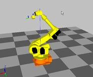

|
Figure 1.199 Axis B Singular Point |

Figure 1.200 Axis S Singular Point |
Previous error code: E0134 (○ axis) Maximum speed exceeded
1.1.68.1. Outline
Speed of Robot's axis exceeded the maximum speed limit while an operation. An error will be generated and the Robot will be immobilized since the Robot is not being controlled normally.
When the Main Board sends a command to the Servo Board, it will send a limited command so that the Robot will not exceed the maximum speed limit. Maximum speed exceeded error may occurs if the Robot's speed triggers an overshoot because the Robot could not follow the command.
1.1.68.2. Causes and examine methods
|
(1) Please check if the tool data has entered correctly.
(2) Please check if the position of Robot is close to the singular point.
(3) Please check the setting value of condensation acceleration/deceleration parameter and the load factor.
(4) Please adjust the job program. |
(1) Please check if the tool data has entered correctly.
If the weight or the inertia of tool is different from the registered value at the controller, Robot's control performance will be reduced and the maximum speed limit exceeded error can occur. Tool's weight and the inertia can be registered from the below menu according to the number of tools.
Ø System
Ø 3. Robot Parameter
Ø Tool data
You may use the load estimation function in order to set the weight of tool or the inertia automatically.
Ø System
Ø Automatic constant setting
Ø 4. Load estimation function
(2) Please check if the position of Robot is close to the singular point.
This error may occur, if you execute L interpolation or C interpolation instead of PtP interpolation near the position of singular point.
Singular point occurs when the B axis is close to 0 deg, or the center of wrist part is close to the spin central axis of S axis. When passing near the singular point is required, please change the corresponding step to PtP interpolation.
(3) Please check the setting value of condensation acceleration/deceleration parameter and the load factor.
Motor torque is insufficient, because maximum speed of condensation acceleration /deceleration parameter is too high or the acceleration time is too short. l/lp maximum speed had to be reduced with an observation of load factor (while the Robot's operation) or increase the acceleration time.
Ø System
Ø 3. Robot Parameter
Ø 34. Acceleration /Deceleration Parameter
(4) Please adjust the job program.
Please make changes of conditions (from the job program) on a corresponding step, or the one step prior to it. Firstly, try "Acc=0", secondly, reduce the step speed, and thirdly, add one more step on a movement routine.